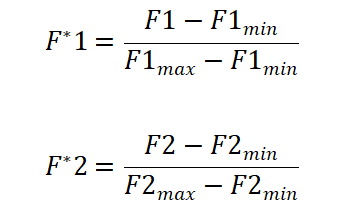
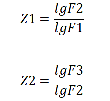

研 究
简介
本项目是结合流动人口增多的背景，旨从目的语输入的量与质、 心理建设，数字鸿沟等方面找出留守儿童所面临的问题并提出解决策略， 从而促进政策更好地落地实施，并以此弱化部分外来务工人员的边缘化问题。
前期工作主要有实地辅导教学，收集音频，制作问卷以及运用Praat以及Python 等软件对不同方言等级的材料分开分析，并根据数字鸿沟制作李克特量表、PPS 取样收集问卷等平衡由于群的规模带来的概率差异，并进一步分析， 后期进行部分回访调查与实地教学验证，另外通过制作网站扩大传播范围等等。 在该过程中我们也发现了许多志同道合的伙伴，所放视频部分原为收费内容， 若需转载请征询原博主意见，也欢迎更多视频博主的加入。
藉由Praat的语音分析
前言
根据经典语音学理论，元音的音色主要由元音的前三个共振峰（formant）F1，F2和F3决定。 F1 与舌位高低有关，F2 与舌位前后及唇的有关。而英语的发音效果很大程度上取决于元音的发音。 为探究方言在那些方面对英语元音发音造成印象，本组成员经过研究，决定分别分析英语母语者与受方言影响的非母语者共振峰的差异。
模型选取
在动手分析之前，本组成员了解到不同发音人在个性生理特征和发音特征等不尽相同，因此若要尽可能消除此类差异得到元音固有的本质特征，
需要先对收集的元音数据做元音归一化（vowel normalization）。传统的归一化方法是线性归一化，即：

然而此方法的方差较大，收敛性不尽人意。经过调研，我们采用了一种方差更小，收敛性更好的模型——对数商模型，其表达式为：

Z1 增大代表舌位升高，Z2 增大代表舌位后缩，不同发音人的相同元音都有自己的分布区域， 基本上稳定在一个椭圆形的区域内，它代表了元音的合理的发音范围。
数据收集
数据收集分为两个方面：一是收集母语者元音发音的音频；二是收集受方言影响的非母语者元音发音的音频。 因条件有限，母语者的发音我们采用的是互联网上母语者制作的发音视频；而非母语者的发音则是来自湖北某地区的小学学生。
我们收集到了4段母语者音频和6段非母语者音频。音频内容是对国际音标音标[i:] [з:] [ɔ:] [u:] [a:]的朗读。
数据分析
首先我们先将音频导入praat，并得到每个元音的F1，F2和F3的数值表。
然后分别计算Z1和Z2的值，并制作表格。最后利用python程序读取表格并实现数据可视化。可视化结果如下：
上图是对母语者的各个元音发音的分析。从图中可以看出相同元音数值分布较为集中而不同元音之间数值上有较大差异且区域几乎没有重合。
上图是对非母语元音发音的分析。首先，排除个别误差较大的点，可以发现受同一方言影响的非母语者发音的数值较为集中。再对比母语者的图， 可以很明显发现各个元音的数值整体呈现出Z1和Z2都减小的趋势，即相对母语者，其舌位更为下沉和前伸。
结论
通过对比母语者和受方言影响的非母语者在Z1和Z2数值上的差异，我们可以初步得出相对母语者，非母语者舌位更为下沉和前伸。 然而受限于准备时间和数据量，实验的精准度还有待提高。并且目前仅仅分析了[i:] [з:] [ɔ:] [u:] [a:]这5个音标，结论并不具有很强的普适性。 今后本组成员将继续开展相关数据的收集和分析，力求得到更为准确的结论。
方言如何影响英语发音
前言
2020年11月30日《流动儿童蓝皮书：中国流动儿童教育发展报告（2019~2020）》正式发布，作为一项针对17000多名农村寄宿制学校学生的大型研究，其结果显示，与非回流儿童相比，回流儿童的学业成绩更差， 留级比例也更高，达到了22%。回流儿童即回到原户籍地的流动儿童。在对该部分孩子的探访中我们得知方言差异有时会让他们感觉同一字母也有不同读音， 导致听力还有书写出现错误。另外听了不同地区的老师发音，孩子自己对读音的准确性其实随着次数增多不再过于敏感， 也不再急切于在语言启蒙阶段纠正发音。另一方面，根据部分回流儿童回忆迁移到务工的父母的居住地后因为与周围同学方言不通， 询问学习问题受到一定阻碍，遇见能和自己在当地成绩评价系统没有对口语做出有关要求，双减政策的下达让老师们投更多精力于成绩考核的重点。 并且疫情的到来使得网课也没有较多投入在发音方式上面。
关于河南鲁山县某小学与湖北崇阳县某小学被试者某些元音发音分析及正确发音技巧
1./iː/属于单元音、前元音及长元音。因为鲁山县方言习惯倾向于舌尖触上齿，该音容易读成./ei/， 崇阳县方言习惯倾向于舌尖触上颚，正确发音方式为嘴唇扁平发音时张开嘴巴，嘴唇成扁平形向两边伸开， 舌前部抬起，舌尖触下齿，像微笑，发音和“医”相似。
2.中元音[ɜː]，鲁山县方言习惯卷舌，部分孩子卷舌超出适中的程度导致无法发出元音应有的长度，崇阳县方言不习惯卷舌导致发成“日”音，正确发音方法舌身平放， 舌中部伸向硬颚，但不要接触到硬颚，舌部肌肉紧张双唇稍稍张开，位置和发[iː]时相似这个音听起来和汉语的"饿"相似。
3.后元音[ɔ:] 是中高、后舌位、圆唇长元音。舌位:舌尖抵住下齿，舌后部向软腭抬起，舌后身肌肉稍紧张些；唇形:双唇呈圆形而突出；声带:振动。有些鲁山县方言者将[ɔ:]发得似“奥(ao)”的音，原因是习惯于双唇较于轻松，没有将双唇呈圆形突出去，同时，舌位偏低，舌身不够紧张，发音过程中，唇形有变化，不稳定。 元音[ɔ]并不是长元音[ɔ:]单纯缩短而成的。发音时，舌后部要向软腭抬起，但比发[ɔ:]时抬得要低，牙床几乎全开，圆唇。
4.[u:]是高位、圆唇后元音。舌位:舌尖离开下齿，舌后部向软腭抬起，在后元音中舌位最高；唇形:双唇收圆，向前用力突出，肌肉紧张，成一小孔；声带振动。 技巧提示：[u:]与汉语"屋"的区别在于舌位和音长不同。发“屋”时，后舌与软腭之间有摩擦，而且唇形也不像[u:]那样紧张。
5./a:/是长元音，读“阿”，拖的长一点。具体发音方法： 发音时，嘴巴放松张大，牙床全部张开。舌端离下齿，舌身低平后缩，舌后部稍抬高.双唇呈圆形说：“啊”。
6./ə/是元音音标，属于单元音、中元音及短元音，发音时牙床半开，双唇略扁平，舌身平放发非重读的音嘴微微张开，嘴唇放松，舌身平放。 舌中部伸向硬颚，不要与之接触。口部肌肉和舌头放松，震动声带，气流向外发出/ə/音。/ə/是中央、不圆唇、非重读元音。
7.[∧]英音里面是介于a和反着的e之间的一个音。这个音标口型不要开口很大，发这个音的时候注意以下两个要领:后元音，既发音部位靠后，短元音，短而急促。 发音时，嘴唇稍紧张，向两侧展开，呈微笑状态，牙齿张开一道细缝，口型略小，不能过大，短而急促。
8./e/是是元音音标，属于单元音、前元音及短元音，发音时舌尖抵下齿，舌前部稍抬起，嘴唇向两侧分开，气流从咽喉冲出发类似“诶”的音。嘴唇向两侧微微分开，上下齿之间大约可容纳一个小指头尖的距离。 舌前部在发音过程中抬起，舌尖稍微接触下齿背。发音时下巴逐渐向下移动，震动声带，发出/e/音。
9./æ/是元音音标，属于单元音、前元音及短元音，这个音是字母a在重读闭音节中的发音。发音时舌尖抵下齿,舌前部稍抬高，舌位比/e/更低，双唇平伸，成扁平形。嘴唇向两侧尽量分开，嘴巴张开较大，上下齿之间大约可容纳两个手指的宽度。 舌前部在发音过程中抬起，舌尖稍微接触下齿背。发音时逐渐压低舌头和下颚，尽可能夸张，震动声带，发出/æ/音。
心理学分析
研究方法
对湖北与河南两地抽取小学生样本，采取当场发放当场回收的方式，发放纸质调查问卷150份。 回收141问卷份，回收率94.0%， 剔除无效问卷后，有效问卷共124份，有效率87.9%。其中，男生70人，女生54人。
问卷制作
宋芳（2007）提出将自尊结构分为重要感、胜任感、归属感、外表感四个维度，并根据四个维度模型的合理性和有效性编制了共有18个题目的自尊问卷，采用李克特5级计分法。 总问卷和各因子的内部一致性信度介于0.76-0.85之间。重测信度为0.88。校标效度为0.83。本研究使用SPSS22.0对回收的有效数据进行了统计处理
研究工具
采用中文版的Rosenberg自尊量表。Rosenberg自尊量表中文版最初共有10个项目 （如，“我感到自己是一个有价值的人，至少与其他人一样”），采用李克特四点计分法，1表示“很不符合”，4表示“非常符合”，得分越高表明个体的自尊程度越高。但由于第8题“我希望我能为自己贏得更多尊重”所表述的内涵存在文化差异。 许多研究者在使用将其删除以提髙量表信效度，本研究也采用此做法。在本研究中，该量表的ａ系数为0.80。
结论
根据配对组t检验表明，留守儿童组自尊水平（M=2.69，SD=0.46）与非留守儿童组自尊水平（M=2.87,SD=0.42）存在显著差异，t（123）=4.599，p=0.034， 即留守儿童自尊水平显著低于非留守儿童自尊水平。而结合本研究中留守儿童英语学习情况较之于非留守儿童不尚乐观，这也进一步验证了自尊与英语学习呈现正相关的结论，而自尊这一重要的心理特质也可成为解决留守儿童英语学习困境的一个突破口。
参考文献
[1]James,W.he principles of psychology[M]. Cambridge, MA: Harvard University Press,original work published,1980.
[2]Coopersmith S. The Antecedents of Self-esteem [J]. San Francisco W.h.Freeman: 4-5，1967.
[3]张向葵，刘双．西方自尊两因素理论研究回顾及其展望[J]．心理科学，2008，(2)：494-499
[4]Rosenberg, M.. Conceiving the Self[M]. New York: Basic Books, 1979.
[5]朱智贤. 心理学大辞典[Z]．北京：北京师范大学出版社，1989.
[6]顾明远.教育大辞典[Z]．第5卷．上海：上海教育出版社，1990.
[7]魏运华. 自尊的概念、结构及其测评[J]．社会心理研究，1997，3：55~63.
[8]Solomon S, Greenberg J, Pyszczynski T. Terror management theory of self-esteem.[J]. Advances in Experimental Social Psychology, 1991, 29(08):61-139.
[9]张科. 中国英语学习者中贫困生的自尊与口语产出任务的相关性研究[D]．重庆：重庆大学，2007.
[10]强朵. 高中生英语学习策略、自尊与英语成绩的相关性研究[D]. 延安大学，2018.
[11]宋芳. 大学生自尊及其与归因方式的关系[D]. 辽宁师范大学，2007.
[12]Tafarodi, R. W., & Jr, W. B. S. Two-dimensional self-esteem: theory and measurement. Personality & Individual Differences, 2001, 31(5), 653-673.
[13]Coopersmith S. The Antecedents of Self-esteem [J]. San Francisco W.h.Freeman, 1967: 4-5.
[14]汪向东，王希林，马弘．心理卫生评定量表手册．北京：中国心理卫生杂志社，1999.
[15]田录梅. Rosenberg（1965）自尊量表中文版的美中不足．心理学探新，2006，26（2），88-91.
[16]陈陈，燕婷，林崇德．大学生完美主义、自尊与学业拖延的关系. 心理发展与教育. 2013. 29（4），368-377.
[17]马骁.中国方言对英语语音学习的影响.[J].校园英语.2018（5）.
[18]周博.人口流动背景下的中国城乡“数字鸿沟”[J].求索,2021(06):112-120.DOI:10.16059/j.cnki.cn43-1008/c.2021.06.019.
[19]周学文.元音归一化的对数商模型[C]//第十二届全国人机语音通讯学术会议（NCMMSC2013）论文集.[出版者不详],2013:310-315.